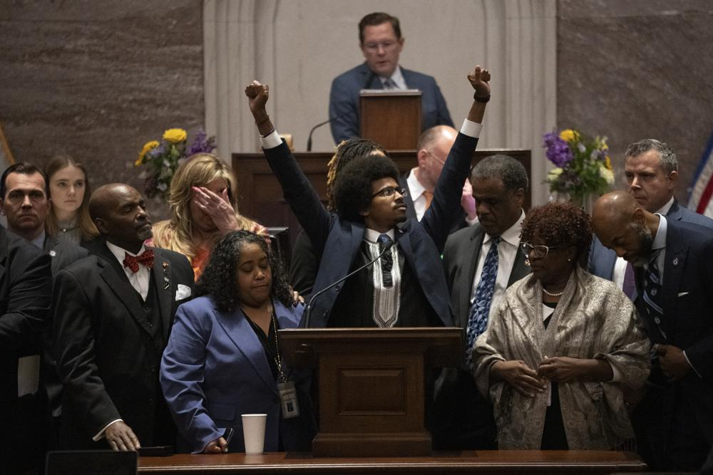

HTML/CSS Assignment #1
Source:The Associated Press
![A sign rests on the desk of Rep. Gloria Johnson, D-Knoxville, in the House chamber as proceedings were brought to expel her from the legislature Thursday, April 6, 2023, in Nashville, Tenn. In an extraordinary act of political retaliation, Tennessee Republicans on Thursday expelled Rep. Justin Jones, a Democratic lawmaker from the state Legislature for his role in a protest that called for more gun control in the aftermath of a deadly school shooting in Nashville. Rep. Gloria Johnson narrowly avoided being removed. (AP Photo/George Walker IV)](1000.webp)
A sign rests on the desk of Rep. Gloria Johnson, D-Knoxville, in the House chamber as proceedings were brought to expel her from the legislature Thursday, April 6, 2023, in Nashville, Tenn. In an extraordinary act of political retaliation, Tennessee Republicans on Thursday expelled Rep. Justin Jones, a Democratic lawmaker from the state Legislature for his role in a protest that called for more gun control in the aftermath of a deadly school shooting in Nashville. Rep. Gloria Johnson narrowly avoided being removed. (AP Photo/George Walker IV)
Tennessee becomes new front in battle for American democracy
Tennessee Republicans expel two Black lawmakers from the state Legislature for urging the enforcement of gun-control measures.
By Travis Loller, Adrian Sainz and Gary Fields
NASHVILLE, Tenn. (AP) — Tennessee has become a new front in the battle for the future of American democracy after Republicans expelled two Black lawmakers from the state Legislature for their part in a protest urging passage of gun-control measures.
In separate votes on Thursday, the GOP supermajority expelled Justin Jones and Justin Pearson, a move leaving about 140,000 voters in primarily Black districts in Nashville and Memphis with no representation in the Tennessee House.
Kevin Webb, a 53-year-old teacher from Pearson’s district, said removing him “for such a small infraction” is “classic America.”
“There’s been bias against Black individuals in this country for 500 years,” Webb said. “What makes us think that it’s going to stop all of a sudden?”
Pearson and Jones were expelled in retaliation for their role in the protest, which unfolded in the aftermath of a school shooting in Nashville that killed six people, including three young students. A third Democrat was spared expulsion by a one-vote margin.
The removal of the lawmakers, who were only recently elected, reflects a trend in dozens of states where Republicans are trying to make it harder to cast ballots and challenging the integrity of the election process.
At least 177 bills restricting voting or creating systems that can intimidate voters or permit partisan interference were filed or introduced in dozens of states so far this year, according to the Brennan Center.
“It represents a really slow erosion of our democracy,” said Neha Patel, co-executive director of the State Innovation Exchange, a strategy center for state legislators working toward progressive policies.
Patel called the expulsions “the third prong of a long-range strategy.” She said it was once “unprecedented” for states to make it harder for people to vote, but the practice has become “commonplace.”
It’s also become common for the GOP to challenge the electoral processand raise questions about election integrity. The next question is whether states with Republican supermajorities will follow Tennessee’s lead in expelling opponents with different points of view, she said.
Fred Wertheimer, founder and president of Democracy 21, a nonpartisan organization advocating for better government, said expulsions have generally been reserved for lawmakers involved in criminal activity.
Voters losing their chosen representatives for doing their jobs is “unheard of,” Wertheimer said. He has not learned of any similar action in other states, “but this stuff travels.”
The action in Tennessee drew outcries from a range of groups.
National Urban League President Marc Morial said the issue was about race, but “it’s not only about race. It’s about basic American values.”
Referring to the right to vote, freedom of speech and freedom of assembly, he said, “It appears as though the Tennessee Legislature needs a refresher on the American Constitution.”
The president of the Congressional Black Caucus, Nevada Rep. Steven Horsford, called for the Tennessee lawmakers to be returned to their seats and for Attorney General Merrick Garland to look into potential violations of the Voting Rights Act.
NAACP President and CEO Derrick Johnson said the civil rights organization was prepared to take legal action “to ensure that this heinous attempt to silence the voice of the people is addressed in a court of law.”

Former Rep. Justin Pearson, D-Memphis, raises his fists as he delivers his final remarks on the floor of the House chamber as he is expelled from the legislature Thursday, April 6, 2023, in Nashville, Tenn. Tennessee Republicans ousted two of three House Democrats for using a bullhorn to shout support for pro-gun control protesters in the House chamber. (AP Photo/George Walker IV)
House Speaker Cameron Sexton pushed back against criticism that he was leaving thousands of Tennesseans without representation and taking away their voice.
“There are consequences for actions,” he said. “Those members took away the voice of this chamber for 45 minutes when they were on the House floor leading the protest and disrupting the business that we’re doing.”
The trio’s participation in the demonstration lasted only a few minutes. It was Sexton who called for a recess to meet with lawmakers.
Webb questioned why Jones and Pearson would be expelled while Rep. Gloria Johnson, who is white, was not.
Clayton Cardwell, who lives in Jones’ district in Nashville, said in a telephone interview that the protest in favor of stricter gun laws last week was “the right thing to do.”
“I was hoping that the entire House would join in,” he said. When the retired teacher was getting his master’s degree in special education, Cardwell remembers being told that teaching was the safest occupation you could have. “Now I think it is one of the most dangerous.”
Cardwell, who is white, also questioned the motives behind the expulsions: “We’ve just got a lot of old white men there who are prejudiced.”
Nashville attorney Chris Wood was so concerned about the possible expulsion of his representative that he went to the Capitol on Thursday to watch the proceedings.
“It was appalling,” he said. “It was an abuse of power.”
Wood has three children in public schools and called it “unbelievable and immoral” that the Republican majority would refuse to even consider gun restrictions.
No issue could be more important to the community “than ending gun violence and letting our kids come home at the end of the day,” he said. “This is the only country in the world where this happens.”
Wood expects Jones and Pearson to be back soon. They could be reappointed to the House by county commissions in their districts and run again in a special election.
Andrea Wiley, a lifelong Tennessee resident who lives and works in Pearson’s district, said she was embarrassed for the state.
“It’s really hard to be from here and see us in the national news at this level,” she said. “It is really scary to me that I don’t have a voice in Nashville that’s representing me, my community, my neighborhood.”
Tamala Johnson said she and her family voted for Pearson and she agreed with him about changing gun laws.
“I don’t think he should have been expelled for voicing his opinion,” Johnson said.
The vote to expel “makes me feel like we don’t have a word,” she said. “You threw him out just because he’s fighting to improve gun laws. … There’s no trust."